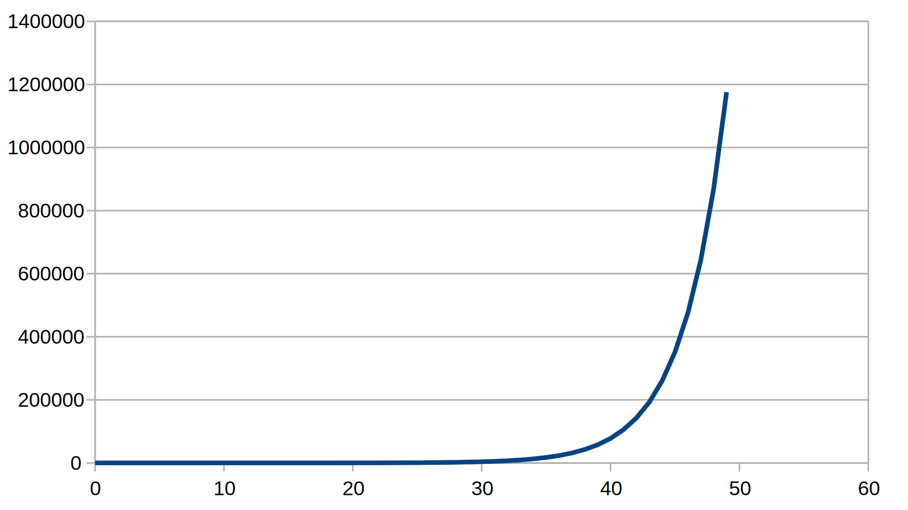

Infection delays
Example 2: Three-day delay
As the infection period extends, life gets more complicated since we don't have simple solutions like the quadratics we learned in school. For cubics and quartics (up to fourth power), there are non-obvious solutions, which seem to have been found more by luck than judgement during the Italian Renaissance, and kept secret for a time, giving advantage to the knowers in maths competitions. Quintics (fifth power) and beyond don't even have a general solution, as shown by Galois before dying in a duel. These equations can be treated numerically, which is how we will treat a three-day example, although in principle one could find a solution. I studied:
\[I_{n} = 0.25I_{n - 1} + 0.75I_{n - 2} + I_{n - 3}\]
giving a characteristic:
\[a^{3} = 0.25a^{2} + 0.75a + 1\]

As it happens, the real solution is about 1.35. There are also two complex solutions, roughly –0.55±0.66i. The absolute value of the complex solutions is about 0.86, less than the real solution. Having absolute values less than 1, means the complex solutions are damped, tending to zero. I initially tried working wholly on a spreadsheet, but in this case a python 3 script enabled me to match the sum of powers predicition to the recurrence calculation. The script references scipy/numpy modules that you might need to install using pip3 or whatever. The script is also adaptable to work out the characteristic solutions for longer infection periods. The output is a csv file with the brute force calculation and a “patient zero” fit to the characteristic solutions:

The backwards behaviour (retrodiction), also included, is even more bonkers since the two complex solutions play off each other, giving oscillations with a growing amplitude.

This is better understood by putting the various complex bits in polar form. The real characteristic solution is damped in the backward direction. A simple-minded yesterday/today ratio comparison is not much use for relating the behavior to these roots. In the context of infections, the negative time solution is of little practical interest, since it didn't exist before “patient zero”, who is assumed to come from nothing (or ex nihilo , as Boris Johnson would say).